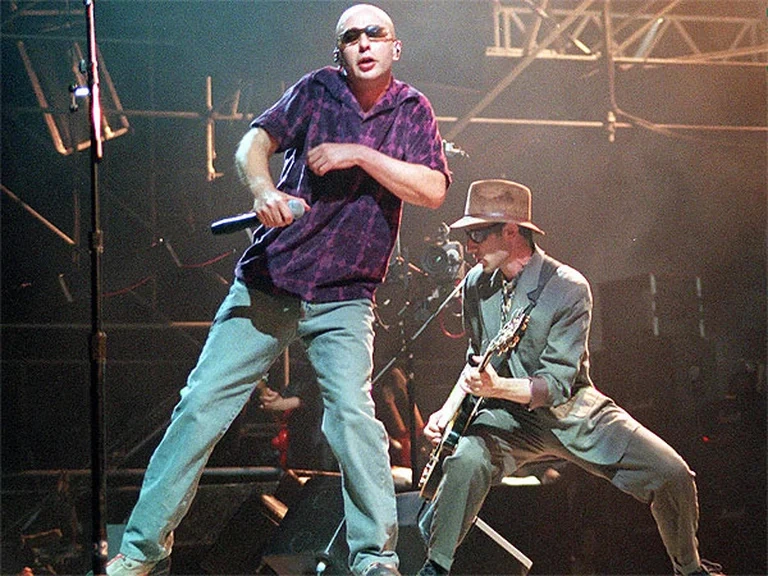

Patricio Rey
y sus redonditos de ricota
Noticias

El nacimiento de Patricio Rey
Publicado el 27 de mayo, 2025
La prehistoria de una leyenda, nacida en el under de las diagonales. El Pasaje Rodrigo, las primeras canciones y toques en bares, teatros y sótanos.

Un chancho puede comer un jamón
Publicado el 26 de mayo, 2025
1991 amaneció nublado para Los Redondos. Los fuegos de Oktubre se habían disipado y la banda del under venía de reventar Obras

El Sultán que cocinaba los redonditos
Publicado el 25 de mayo, 2025
Se llamaba Edgardo Gauidini, alias «el Doce» y «el Sultán«, y fue parte de los inicios de cofradía artística que fue Patricio Rey y sus Redonditos de Ricota.

La última noche de los Redondos
Publicado el 24 de mayo, 2025
Los motivos reales y profundos de la separación de Patricio Rey y sus Redonditos de Ricota.
Discos
Gulp!

Publicado el 22 de Abril de 1985
Gulp! fue grabado en 1984. La grabación tiene un aire festivo, apoyándose los temas en sólidas melodías de guitarra y saxofón. La portada fue realizada por Rocambole Cohen.
Oktubre

Publicado el 4 de octubre de 1986
Oktubre es el segundo álbum de estudio del grupo de rock argentino Patricio Rey y sus Redonditos de Ricota.El álbum se ambienta en la Revolución Rusa de 1917
Un baión para el ojo idiota

Publicado el 9 de mayo de 1988
El tercer álbum,presenta un sonido mucho más sólido, comenzando a utilizar guitarras eléctricas distorsionadas y ritmos de batería en donde se siente un sonido de rock and roll más clásico.
¡Bang! ¡Bang! Estás liquidado

Publicado el 4 de octubre de 1988
Durante 1989 la banda se concentró en grabar en el estudio Del Cielito lo que sería el nuevo material. El arte de tapa se inspiró en la pintura El tres de mayo de 1808 en Madrid de Francisco de Goya.